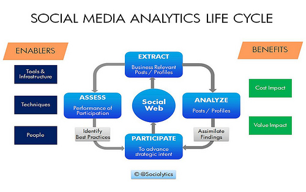
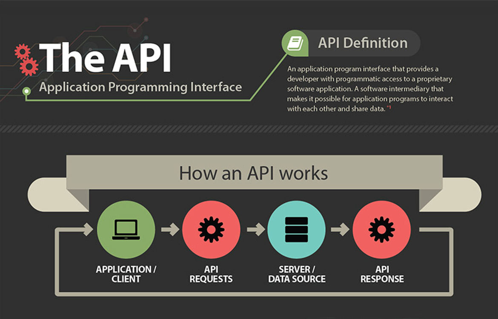

This blog is about social media analytic and extracting data from social media using API.
Social Media Analytics refers to the approach of collecting data from social media sites and blogs and evaluating that data to make business decisions. This process goes beyond the usual monitoring or a basic analysis of retweets or likes to develop an in-depth idea of the social consumer.
1) Access Tokens: When authorizing, the access tokens will be provided in order to make requests to the API of social media. Usually, it is either just one token or a token with a key to it. The issue is that these tokens may become invalid due to changing the password or simply expiring.
2) Limits: All social media have their own limit for the number of requests. While some of them allow for making quite a lots requests, the others have very strict limitations.
3) Caching: Social media cache data all the time. As a result, users have to face the situation when the number of followers in the API request may not match the actual number of followers in the social media.
4) Pagination: Social media has tons of users who generate an insane amount of content. If they used standard pagination, the user experience would leave much to be desired. For example, while the user is reading the first 10 posts on the first page of their newsfeed, their friends have created 5 more posts. Because of that, the user would see the same posts on the second page. This is why all social media use either a cursor or boundary parameters. A cursor can be thought as a simple page with the difference that, instead of a number, they pass a special key that the social media returned in the first request. On the last page, this key is empty, which means that there is no data to display. Boundary parameters are usually in the form of timestamp or post id. They are passed with each request, so the user does not receive the posts that are newer than specified.
API stands for application programming interface. This is a concept in software technology that essentially refers to how multiple applications can interact with and obtain data from one another. APIs operate on an agreement of inputs and outputs.
+ Application: These can be apps that you use on your smartphone or a software program that you use.
+ Programming: Developers use APIs to write software.
+ Interface: How you interact with the application.
API stands for application program interface and it refers to some protocols, tools and routines for creating software applications. An excellent API makes developing a program much easier through offering all the required building blocks. The programmer then arranges the blocks to come up with a program.